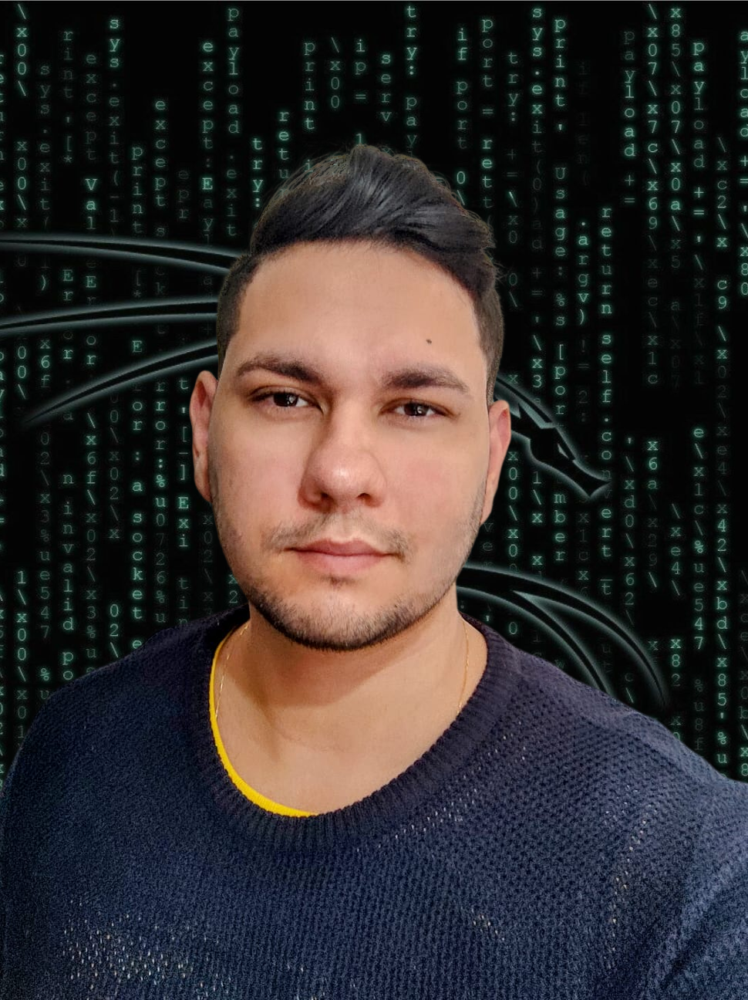

Mario Bispo Junior
Foto
Sobre mim
Habilidades
Canal preferido

Sobre mim
Sou brasileiro, tenho 28 anos, nasci e moro atualmente em Maringá-PR.
Atualmente estudo Desenvolvimento web na trybe e faço faculdade de Análise e Desenvolvimento de sistemas.
Sou apaixonado por tecnologia.
Habilidades
- UNIX & SHELL
- GIT & GITHUB
- HTML 5
- CSS 3
Canal preferido sobre programação
Felipe Deschamps
Este é um canal ao qual acompanho e me ajuda muito no dia a dia sobre programação.